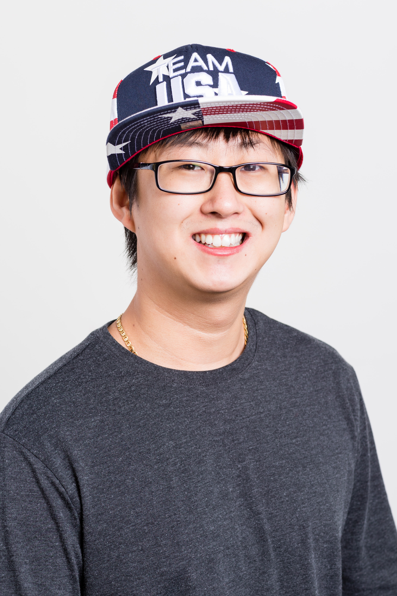

Woojae Yi
... Mission Statement ...
Background
... 1-2 paragraphs ...
Woojae Today
... What am I up to nowadays? ...
Integrity
In simplest form, this means being honest. One way to embody integrity is "doing the right thing even when no one is watching."
At Dev Bootcamp, we are asking you to do a crazy thing: to learn how to be a web developer within a matter of weeks. For you to reach this goal, we need everyone to work together, follow our methodology, and agree to adhere to the rules and guidelines that have made Dev Bootcamp successful.
At Dev Bootcamp, we have codes of conduct that support an optimal learning environment and ensure that everyone gets the most out of the program. We expect you to be in integrity with:
- Showing up on time
- Working through the challenges each week
- Communicating with your accountability group when you are struggling
- Pairing with others
- Asking for help and asking questions
- Submitting and rating feedback
- Going through the entire process outlined in each challenge
Part of being in integrity also means that when you fall out of it for whatever reason (such as being a human being) you own up to it. Most of the time all it takes is and acknowledgment of being out of integrity and everybody can move on.
Kindness
We also expect every person to be kind to one another. Kindness does not mean "nice"; they are actually not the same thing. Being kind does mean being friendly, generous, and considerate, but it does not preclude giving constructive, truthful feedback as long as it is Actionable, Specific, and Kind (ASK).
We expect all students and staff to show kindness by providing feedback and code reviews to one another, informing one another when someone has fallen out of integrity, and by bringing ourselves 100% into every day. We also show kindness through showing respect to others and our space.
Last but not least, we expect you to be kind to yourself. You've taken a big risk and are making a big change. Give yourself some space and understanding as you face the challenges of our program.
Whole Self
We expect you to bring your intelligence, your focus, your creativity, and your personality into each challenge every day. If you are struggling, we expect you to ask others (including staff) for help. If you find that you're holding some part of you back from this experience, we ask that you focus on being authentic with your pair, your cohort, and staff. DBC flourishes when all of us feel safe being authentic with each other.
This includes exposing your ignorance and being open to uncomfortable emotional and technical challenges at DBC.
We expect everyone to complete the assigned challenges, but we want to reinforce that it's not about completing the challenge if nothing is learned. The DBC experience is fundamentally about learning. We expect you to demonstrate effort and mastery of each learning competency by completing the challenges.
Woojae's Resume
External Links
Contact Me
Feel free to shoot me an e-mail at either of the following addresses: Email(1): woojaeyi93@gmail.com Email(2): woojaeyi@berkeley.edu Or you can find me online! - Check out the External Links tab for links to my profiles.